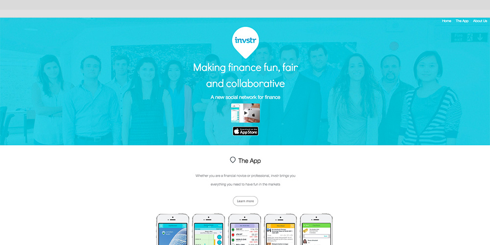
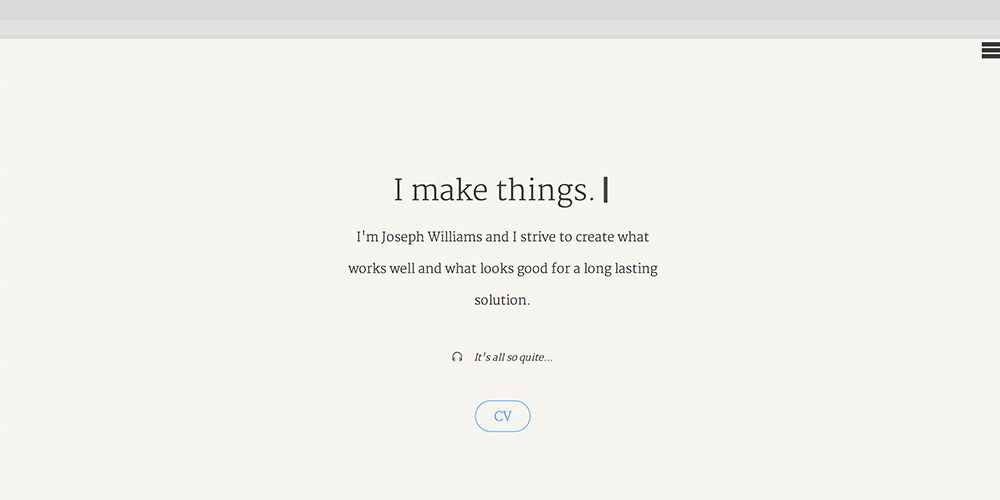
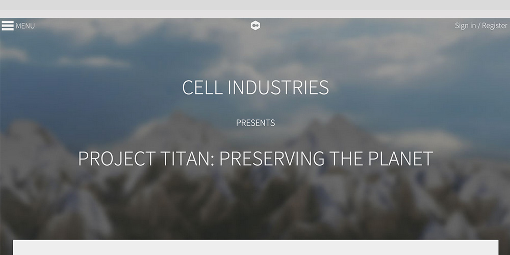
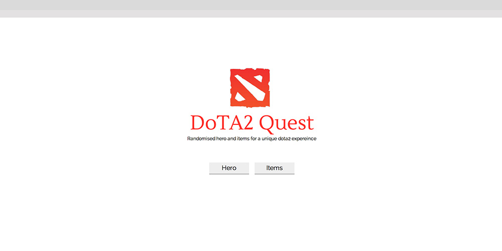
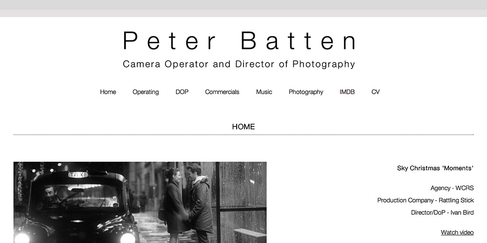
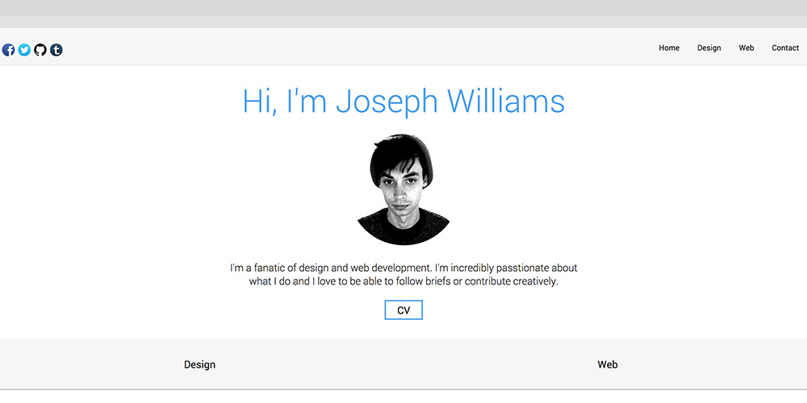
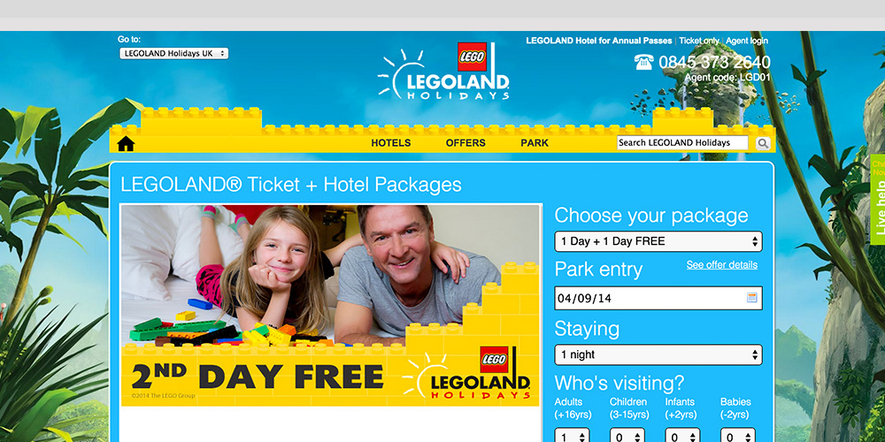

invstr
invstr is a start up company that makes finance social. I redesigned their website so it kept up with modern web practices and design while presenting their information in a more creative way.
HTML, CSS, Mobile first, Responsive, Checkbox hack, SASS, JavaScript
Portfolio V2
A re-design of my portfolio using up to date web technologies. I wanted to push myself from the last iteration of the portfolio to create a more asthetic user expereince.
HTML, CSS, Mobile first, Responsive, Checkbox hack, SASS, JavaScript, last.fm API, Photobucket feed XML, Image Lightbox,
Cell Industries
Cell Industries was created as my Final Year Project in my final year of university with James Alexander Lee and Jacob Hammond. We wanted to use the latest web technologies and industry practices to create a unique web experience as well as to further our own knowledge of web development.
HTML, CSS, Javascript, PHP, WebGL, ThreeJS, WebRTC webcam gestures, Google Elevation API, Google Static Maps API, PHP MVC, Login system, Checkbox hack, Feature detection, Font icons, Mobile first, BEM, Sass.
DotA2 Quest
A side project to experement with JSON strings and calling them. It randomises the selection from the string and makes sure that if a selection has already been chosen, it can't pick it again.
HTML, CSS, Mobile first, Responsive, JavaScript, JSON
Peter Batten Portfolio
A responsive showcase website which houses Peter Batten's professional work. It uses the Vimeo API to allow quick and easily categorized additions and updates to the website. It also uses Peter's Photobucket account to pull in images for his photography page.
HTML, CSS, jQuery, PHP, Respsonsive, Mobile first, Vimeo API, Photobucket feed XML, Image Lightbox, Sass.
Portfolio V1
My personal portoflio that I created while at University to house my work.
HTML, CSS, Responsive, JavaScript, Photobucket feed XML, Image Lightbox
Merlin Holidays
I worked on all of the Merlin holiday websites while I was on my internship during my third year at University. Maintaining the code base and implementing new features as they got designed.
HTML, CSS, JavaScript, CMS, Sprites